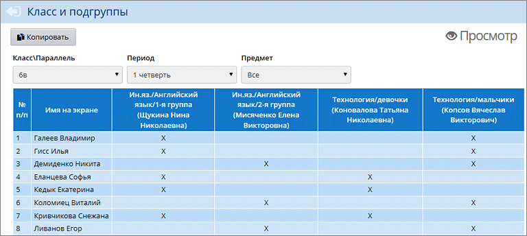
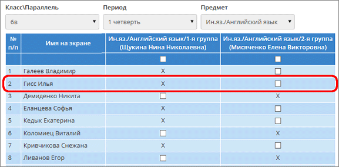
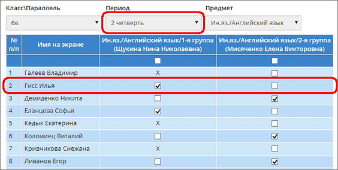
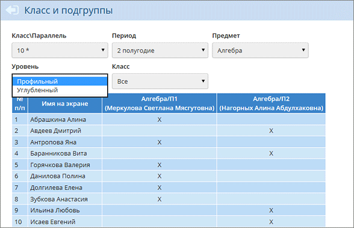

На данном экране отображается деление класса по подгруппам по различным предметам.
Если в фильтре Предмет выбрать "Все", то крестиками отмечается присутствие учащегося в подгруппе в выбранном учебном периоде, как на иллюстрации:

Если в фильтре Предмет выбрать название конкретного предмета, то появляется возможность перевести учащегося из одной подгруппы в другую: для этого следует поставить "галочку" в той подгруппе, в которую нужно перевести учащегося и нажать кнопку Сохранить.
В случае, если в "старой" подгруппе ученик в выбранном учебном периоде имеет:
| · | текущие отметки,
|
| · | итоговые отметки,
|
| · | посещаемость,
|
| · | обязательные задания
|

Чтобы сделать перевод между подгруппами, нужно выбрать другой учебный период: тот период, в котором нет указанной информации для ученика:

Как разделить предмет на подгруппы
См. Инструкцию по созданию подгрупп по предметам.
Примечание: Количество подгрупп в классе на каждом из предметов не ограничено.
Как удалить подгруппу по предмету
Удалить подгруппу по предмету можно, если к ней не прикреплён ни один учащийся, и не выставлены оценки.
| 1. | Необходимо перейти в раздел Планирование -> Предметы;
|
| 2. | Нажать на наименование предмета и перейти в экран "Редактирование свойства предмета";
|
| 3. | Выделить подгруппу в блоке "Подгруппы предмета" и нажать кнопку Удалить.
|
Особенности разделения на подгруппы для ИУП-класса
Если в фильтре Класс\Параллель выбрана параллель, обучающаяся по индивидуальным учебным планам (такая параллель отмечается звёздочкой в списке), то экран Класс и подгруппы имеет следующие особенности:
| 1. | В фильтре Предмет отсутствует пункт "Все".
|
| 2. | На экране появляются два новых фильтра: Уровень и Класс, как в следующем примере:
|
 |
|
|
Если же выбрать конкретный класс (например, 10а), то появляется возможность зачисления учащихся конкретного класса в группы по предмету, а также появляется кнопка Просмотр.
Более подробно о зачислении детей в группы ИУП...